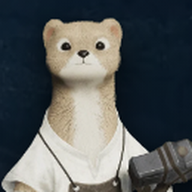
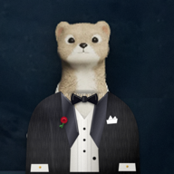
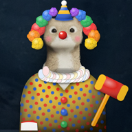
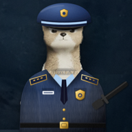

La community italiana di Aion 2
Un server Discord per chi gioca ad Aion 2 in italiano, su qualsiasi server europeo. Elyos e Asmodiani stanno negli stessi canali: la fazione si vede dal ruolo, non da dove puoi scrivere.
Come si entra
Entra nel serverAll'inizio vedi solo le regole e il canale di verifica.
Fai uno screenshot in giocoDeve leggersi il nome del tuo personaggio, per esempio dalla finestra del personaggio (tasto P).
Scrivi /verificaScegli il personaggio dai suggerimenti e allega lo screenshot. Lo staff controlla e ti approva: ricevi fazione, classe e fascia di Gear Score, e il tuo nome diventa quello del personaggio con classe e sigla del server.
Cosa trovi dentro
Canali per cercare gruppo, la lista del Ludra di ogni sera, PvP e assedi, un forum per le domande e uno per le guide, la sezione delle legioni dove i Legion Leader presentano la propria, e i canali del Market con i comandi dei bot.
I quattro bot
Ognuno fa una cosa sola, così se uno si ferma gli altri continuano a funzionare.

Mauro
Market: porta su Discord i prezzi di questo sito.
- /item
- Prezzo più basso, media e grafico a 7 o 30 giorni di un oggetto.
- /craft
- Quanto costa craftare un oggetto, passo per passo.
- /alert add
- Ti avvisa quando un oggetto scende o sale al prezzo che scegli.
- /favorites
- I tuoi preferiti del sito, uno alla volta.
- /server
- Ricorda il tuo server, così non devi scriverlo ogni volta.
- /character
- La scheda ufficiale di un personaggio: equipaggiamento, statistiche, Daevanion.

Alberto
Verifica e ruoli.
- /verifica
- Chiede l'accesso con il tuo personaggio e uno screenshot.
- /aggiorna
- Rilegge classe e Gear Score dal sito ufficiale e aggiorna i tuoi ruoli. Lo fa anche da solo, ogni giorno.
- Canale ruoli
- Pulsanti per scegliere interessi, ruoli da taggare e ruoli Force PvP.
- Legion Leader
- Un ticket per farsi riconoscere come leader: Alberto crea il ruolo della legione e lo dà ai suoi membri verificati.

Gettulio
Eventi: per ora il Ludra.
- /raid
- Apre una stanza Ludra da 10 nel canale del Ludra: due party da 1 tank, 1 cleric, 1 chanter e 2 DPS. Ognuno sceglie party e ruolo con i pulsanti.
- Ruolo della stanza
- Chi si iscrive riceve il ruolo della stanza e viene taggato un'ora prima e 15 minuti prima.
- Vocali dei party
- Quando la stanza è piena crea un canale vocale per party, visibile a tutti; si entra solo se sei in quel party. Lo staff lo chiude quando avete finito.
- Staff
- Admin e moderatori possono spostare, aggiungere o togliere i partecipanti.

Ciro
Moderazione e ticket.
- Ticket
- Segnalazioni, idee e richieste di aiuto in una conversazione privata con lo staff.
- Regole automatiche
- Blocca spam, link di invito e vendita di Kinah.
Regole in due righe
Rispetto per tutti, niente vendita di Kinah o account per soldi veri, niente spam. Le regole complete sono nel primo canale del server.